Overview
Platforming Adventure is a solo project I created to practice level design. I wanted to lean into rapid iteration, focusing on the Kishotenketsu design philosophy popularized by the Super Mario games. This involves introducing a mechanic, developing it, and adding an unexpected twist. This is all done in a short amount of time, usually just a level or two, and then the mechanic is dropped to focus on something new.


Overview
I believe Level Design is the most important part of a good platformer. It takes thorough planning to create levels that are each exciting and unique. If done properly, any level should be a fun experience on its own. Together, a group of great levels can make any game stand out.
Objective
My goal for this project was to build three levels, each focused on a different mechanic. Each level should be:
- Support various platform types for different circumstances
- Easily draw paths without creating empty game objects for each point
- Make custom editor so it is easy to use
Since I was building the entire game myself, I had some limitations. The unique mechanics for each level would also have to be programmed by me, and would cut into some of the level design time.
Research
My main goal for this project was to practice a form of level design called Kishotenketsu. In this style, a mechanic is introduced and developed at the start of a level. It then has some form of twist that uses the mechanic in new and unexpected ways. At the end, it returns to its simple form for a final challenge.
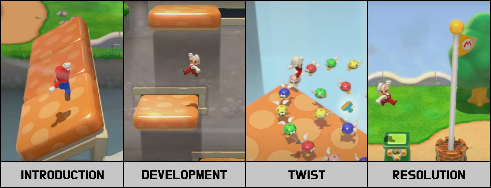I researched the Kishotenketsu design style through various videos and blogs. I also played levels from several different games to see how it was implemented. I looked into how mechanics were implemented and broken into smaller challenges. One thing I hadn’t considered was that there is a “cooldown” area between each challenge. This would be a safe place to collect some coins or power-ups, a checkpoint, or even just a straight path with no enemies. This gives the player some variety, so the entire level isn’t just the core mechanic.
Picking a Core Mechanic
When I started designing the first level, my goal was to pick a mechanic to focus on. My first attempt was to feature breakable blocks that the player could destroy by attacking. When I tried sketching out some challenges, I discovered that the mechanic didn’t seem to stand on its own. I did more research to figure out why it didn’t work. I found out that players abilities are best used to accent the level’s mechanic, rather than being the mechanic themselves. For example, the dash ability in Celeste is present in every level, but no level is just about dashing. Rather, they each have their own unique features that work with the dash to let the player show off their skills. With this in mind, I wanted to find a new mechanic that would highlight the player controller. This meant that I would have to redesign the whole level, but I knew that it would allow me to make something stronger in the end.

Rapid Prototyping
To find something fun to build my levels around, I created a test level with everything I could think of. I took simple scripts for moving and rotating platforms and made as many combinations as I could. Then, I ran around the level and played with each one to see what they played like.
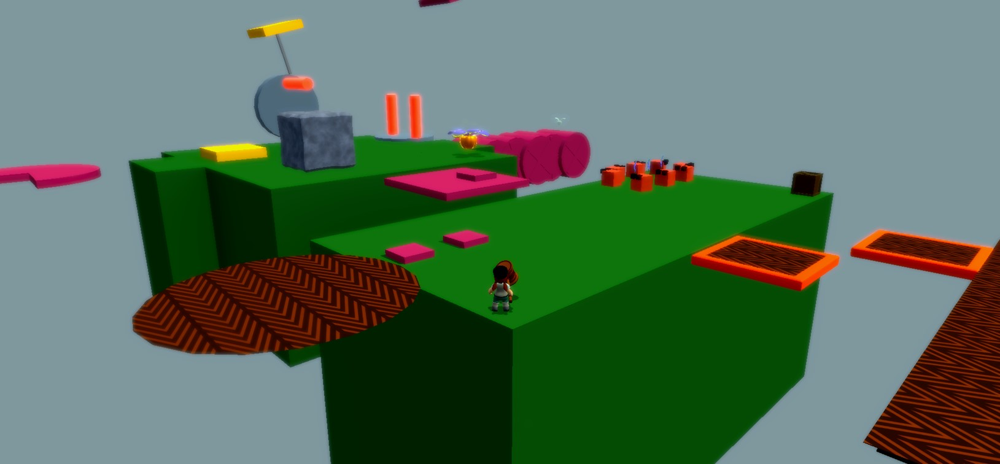I particularly liked the idea of rotating platforms with spikes on them, and started thinking about other ways I could build off that concept.
Back to the Drawing Board
Once I had a better core mechanic, I went back to creating the level. I started by coming up with some ideas that I thought would be interesting using the mechanic. Then, I tried to find a twist that would expand on the mechanic. For this level, I decided that the spinning spikes would start rolling at some point. After I had a twist, I designed more sections using the moving spikes concept. Once I had several ideas for interesting sections, I started ranking them based on their difficulty. I narrowed down my selection to a few interesting ideas and started sketching the level, placing the sections in increasing difficulty as I went.
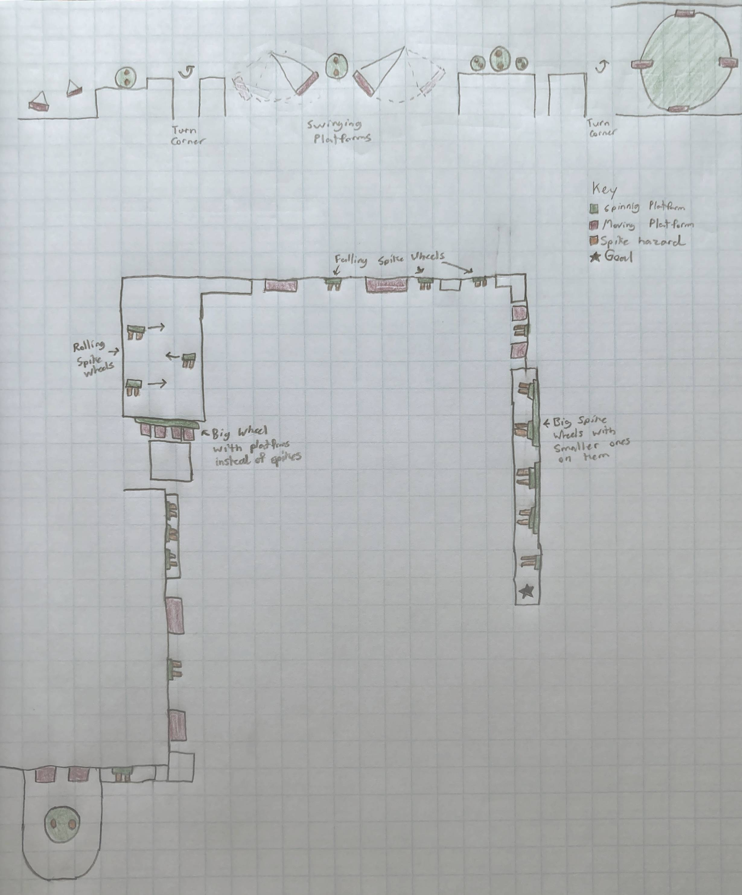Playtest Feedback
I had many people play my level over the course of the project. There were many pieces of feedback that I implemented over the weeks. I increased the number of checkpoints, changed the size of some jumps, and even removed some sections entirely. The biggest surprise was how player struggled with the camera. I had designed each section of the level to play like a sidescroller, but most players moved the camera behind them, and missed jumps because of it.
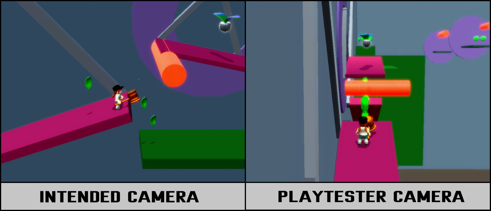After realizing this, I changed the level design again. I kept most of the sections the same, but removed all the areas where the player had to turn around a corner. I also removed the camera controls and instead added triggers that would adjust the camera’s zoom and distance for each challenge. This made it much easier for playtesters to complete sections.
Setdressing
Decorating the level was a fairly straightforward process. Because of all the spinning hazards, I decided that the level should be a factory. I created simple textures for the walls, floors, and platforms. I made the spinning objects into gears, and the spike hazards into flames. Then, all I had to do was place assets throughout the stage to decorate it. Adding the art, animations, and music really brought the level to life.

Results
Creating this level ended up being far more beneficial than I was originally expecting. I learned many valuable lessons that will help me design levels better in the future. I now know that a strong core mechanic shouldn’t rely on the player’s abilities, and choosing one is the first and most important step in the design process. I also learned that giving players less control is sometimes better, as removing the camera control option allowed more playtesters to clear the stage. This project ended up being a really useful exercise in many ways, and my level design skills improved greatly because of it.
Overview
This project was built from scratch in just ten weeks. While the level design was my core focus, everything had to be built by me. It took a lot of planning to make sure the project stayed on schedule. Throughout the duration of the project, I had to change and cut many features to make sure the game would be finished in time. It’s far from what was originally planned, but I’m happy with how it turned out.
Creating a Schedule
I started by making a rough outline of what work I needed to have done by the end of each week. I broke the time into three categories: system, level, and polish. The first two weeks were dedicated to developing the player controller, adding enemies, and updating the camera. The bulk of the time was dedicated to designing the levels, with two weeks planned for each. The last two weeks were for cleaning up external features to make the game more appealing.
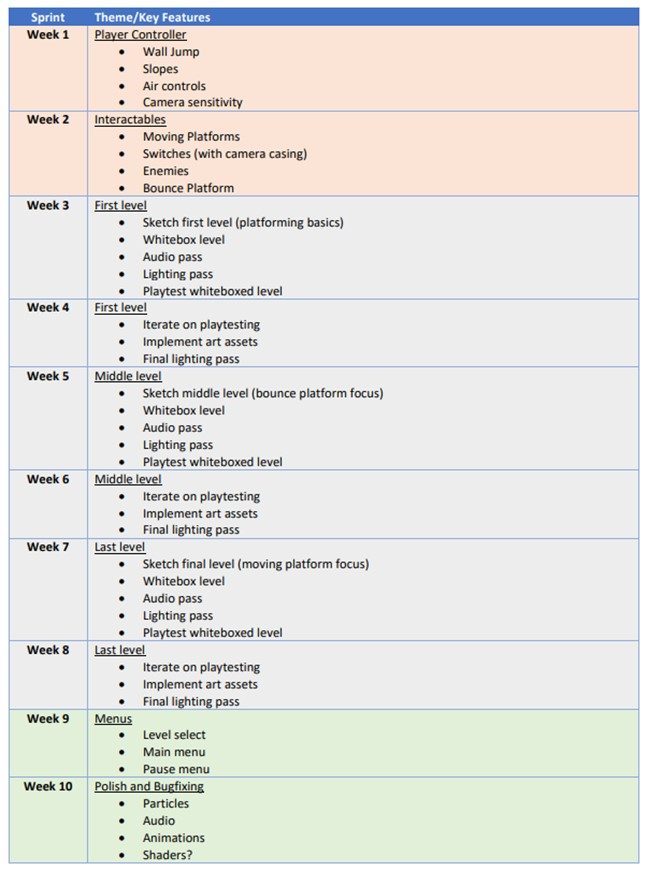At the start of each week, I would look at my plan to see what I needed to do. I would then make a list of specific tasks that I need to accomplish that week. As I completed them, I marked each one to keep track of progress. I also tracked how long each task took so I would be able to plan better in future weeks.
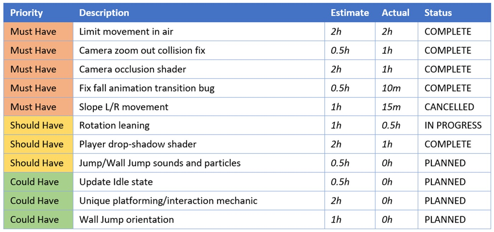Unexpected Roadblocks
I had planned to spend two weeks on each level initially. One week would be sketching, whiteboxing, and playtesting, and the other would be bug fixing, setdressing, and polish. When I started working on the first level, the sketching and whiteboxing phase didn’t go as planned. I ended up losing most of that week and starting the level over from scratch, which put me behind schedule. I was able to create a much stronger level, but knew I would still need more time to polish it.
Adjusting the Plan
At this point, I had a difficult decision to make. If I stuck to my original plan, I wouldn’t have time to polish the levels. Otherwise, I could make just one level, which would prevent me from practicing rapid iteration. It was a difficult decision, but I decided to cut down to just one level. While I had hoped to focus on building several levels with unique mechanics, I knew that I wouldn’t be able to create strong levels if I also had to program the mechanics too. I already had a working level select screen, so I could always add more levels in the future. This way, I could guarantee I reached a level of polish I was happy with.
Finishing the Game
Following the new plan, everything went smoothly through the level design process. Thanks to the extra time, I was able to adapt to unexpected feedback that came up during playtests. This allowed me to make some drastic changes to the level that improved the game as a whole. Being willing to adapt the schedule prevented me from spreading myself too thin and allowed me to make a strong project in the end.
Problem
Creating moving objects in game Engines often involves adding many empty game objects to a scene. This can quickly get out of hand leaving the hierarchy a mess. My goal was to create a fully self-contained solution that is easy for other people on my team to use.
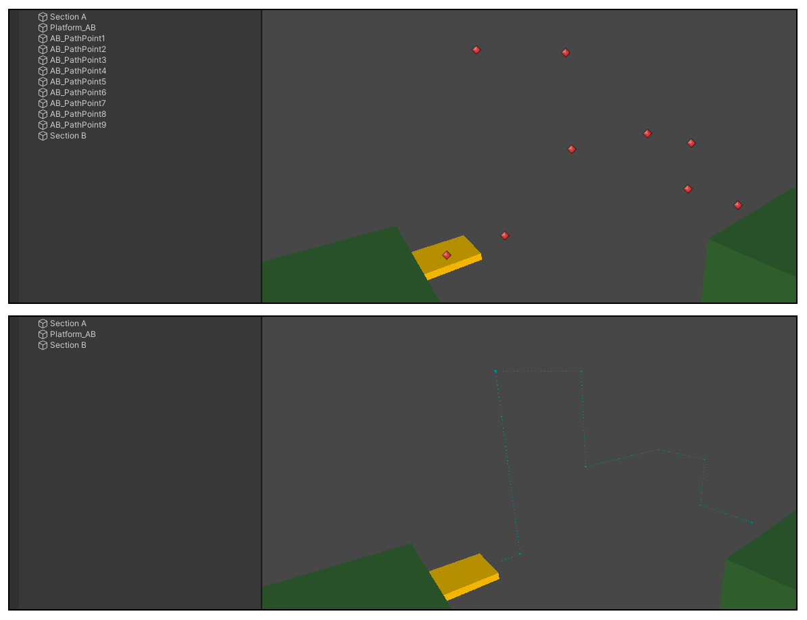Goals
- Support various platform types for different circumstances
- Easily draw paths without creating empty game objects for each point
- Make custom editor so it is easy to use
Process/Overview
- Create a basic moving platform script using game objects as target points.
- Update the system to use serialized vectors for each position.
- Create different options for the moving platform, including movement type, duration, looping, end behavior, and platform count.
- Create a custom inspector to only draw certain attributes as they are applicable (i.e. Don’t include “end behavior” for platforms that loop)
- Create a custom editor to freely control the points using handles instead of hardcoded numbers.
- Update path system using splines instead of linear paths.
- Update custom editor using buttons to select points so only one handle is visible at a time. Add multi-selecting and ctrl selection
- Update points to include rotation
Editor Prototype
My initial goal with this tool was simply to minimize the number of empty game objects that are required to make basic point-to-point movement in Unity. I had created a moving platform script this way in the past and found it inefficient to work with. Instead, I wanted to use a list of Vectors defining each point. I used Unity’s gizmo system to draw where each point was, and even drew a series of smaller points defining the path.
This system made adding new points far easier, but came at the downside of making it harder to move the points. This led me to do research into custom editors to find ways to add Unity’s movement handles to the scene. I created a custom editor script that draws handles at each of the points. Now, whenever a handle is moved, the point moves with it.
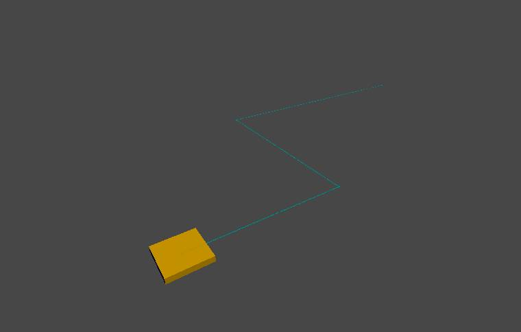Inspector Script
After I’d created the basic movement between points, I realized that there were many other features that movement platforms could have. I looked at various types of moving platforms that I would want to use in my games, as well as common types in other games, and narrowed it down to a few categories.
Movement Type
- Loop
- Ping-Pong
- One-Way
End Behavior
- Stop
- Destroy
- Launch
- Fall
Spawn Type
- One Platform
- Continuous stream
- Platform Count
Movement Trigger
- Play on Awake
- Play on player contact
- Manual trigger only
Other Variables
- Speed
- Pause time at points
Many of these categories had their own variables that didn’t apply to other. For example, if the spawn type is set to “continuous”, there is a variable to determine the time between platforms. Having all of these variables at once made the platforms difficult to set up, since you wouldn’t know which options are useful in each situation. I decided to create a custom inspector alongside the debug drawer to make this more organized. I created specific conditions that would determine if an option should be visible in the inspector. This meant almost every variable would be dynamic, and only ones that are useful for the current platform type would be visible.
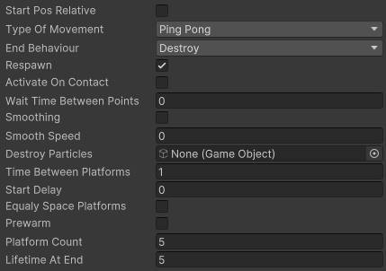Spline Drawer
This system was first created for a smaller project in 2021, and was left untouched for a while. In 2023, I started working on Platforming Adventure and needed a moving platform script. I decided to build off of this script since it was already fairly robust, but I still really wanted to fix the custom editor handles. They made the tool very clunky and difficult to use properly.
I wanted to only show handles on points that are “selected” for movement. I replaced my original method with editor buttons at each point. When one of these buttons was clicked, it toggled the handles on that button.
This was a start, but I felt it could be expanded further. I wanted to add multi-selection so editing large parts of the path would be easy. I started by making an array of all the “selected” buttons. Then, when a button is clicked, it clears the array and adds itself as the first item. If a button is clicked while shift is held, it adds to the array without clearing it. After looping through all the buttons, I draw a single set of handles at the center point of the selected buttons. This moves all the selected points at once.
In its current form, moving a point would also move the handles that define the curve of the spline. This can be useful, but I wanted to add a way to move the point without adjusting their handles as well. I added an option to do so by holding the control key while moving the point. This also works with multiple points selected.
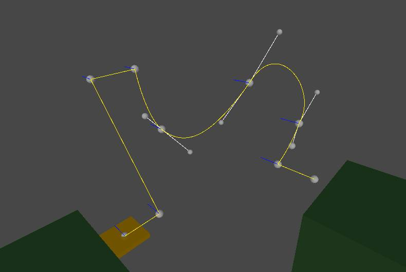Feedback / Testing
Other Uses
Thanks to the versatility of the options, I am able to use this script for elements other than moving platforms.
In one project, I used it for moving spikes and hazards that crush the player.
In another project, I used it to define enemy patrol paths.
I’ve also used it for non-gameplay elements, such as birds and fish.
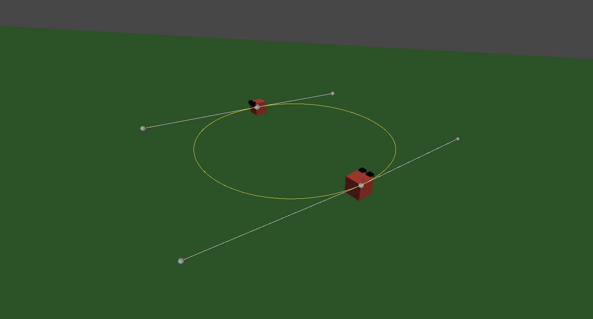Summary
While I am happy with the work I’ve done on this system, there is still room to expand.
Currently, the platforms move at a consistent speed across all the points, but I could see situations in which moving faster at some points and slower at others would be beneficial.
I would also like to be able to scale and rotate entire paths at once. I’ve experimented with adding this, but it’s had more bugs than it’s worth so far.
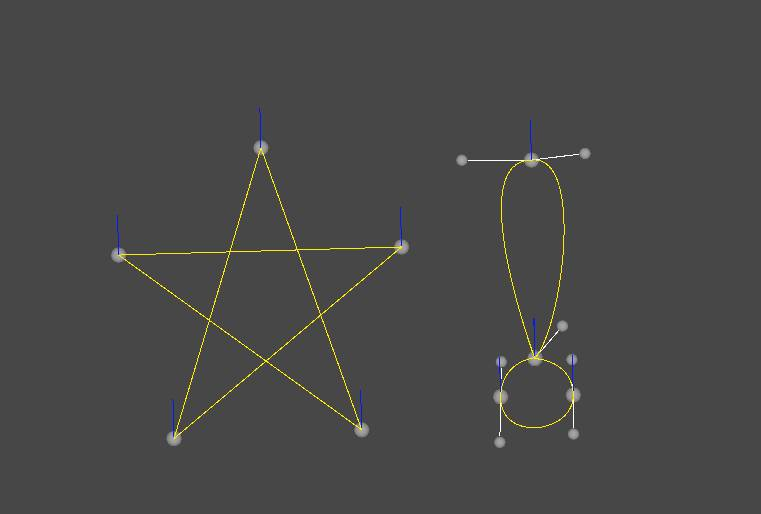